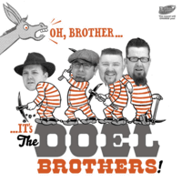

the Doel Brothers - Oh, Brother... It's (Album, 2013)
01 - Educated Mind (2:25)
02 - Goin' Away (2:16)
03 - Kissin' Bug Boogie (1:59)
04 - I'll Do It Everytime (2:13)
05 - Sure You Won't (2:07)
06 - I Need Your Lovin' (1:34)
07 - Pick You Up (2:03)
08 - Whiskey Lovin' Fool (2:37)
09 - Nothin' 'Bout Love (1:53)
10 - Tell Me You're Mine (2:15)
11 - Rockin' Shoes (2:11)
12 - Hey Baby (2:13)
© El Toro Records :: [ETCD 6057]
Notes
David Doel - Guitar
Gordon Doel - Rhythm guitar
Tom Doel - Drums
Steve Whitworth - Upright bass
Songs are written-by D.Doel:"Educated Mind", "Goin' Away", "Sure You Won't", "I Need Your Lovin'", "Pick You Up"
Songs are written-by G.Doel:"Whiskey Lovin' Fool", "Nothin' 'Bout Love", "Tell Me You're Mine", "Rockin' Shoes"
Songs are written-by A.Roberts:"Kissin' Bug Boogie"
Songs are written-by J.Horton:"I'll Do It Everytime"
Songs are written-by T.James:"Hey Baby"
Phonographic Copyright (p) El Toro Records
Copyright (c) El Toro Records
reference information: Discogs®
Review
019/366 (Project 366)
Oh, ... it is the Doel Brothers! Country and Hillbilly tunes are all there. Folk music inserts and real rockin' and rollin' chic make songs sparklin'! Some of them are classy authentic rockabilly tunes with honky tonk mind. And rustic vocals are so atmospheric, always. With merry themes or with ballads. Even hillbilly boogie is so smooth there!